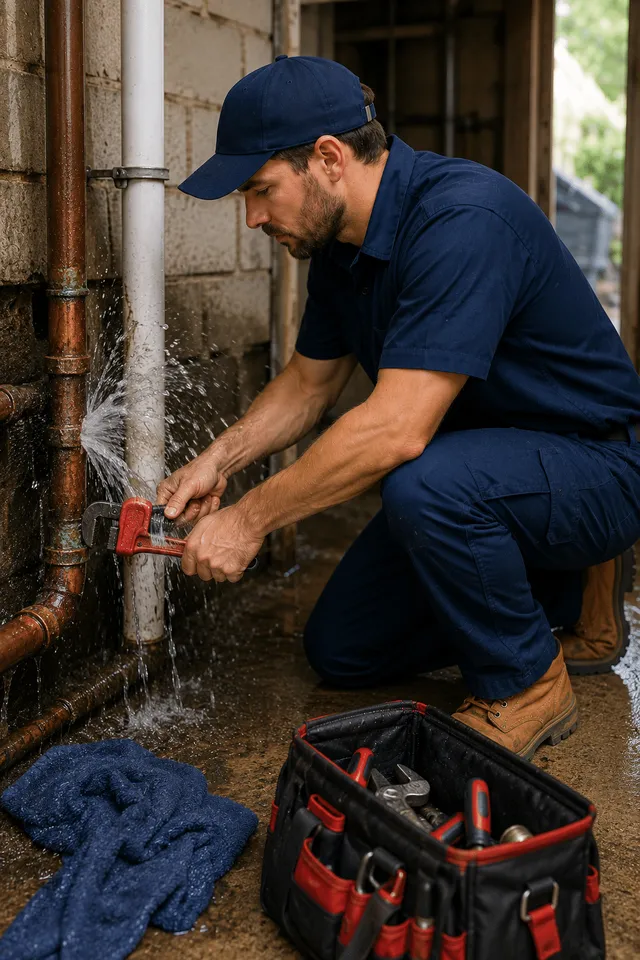
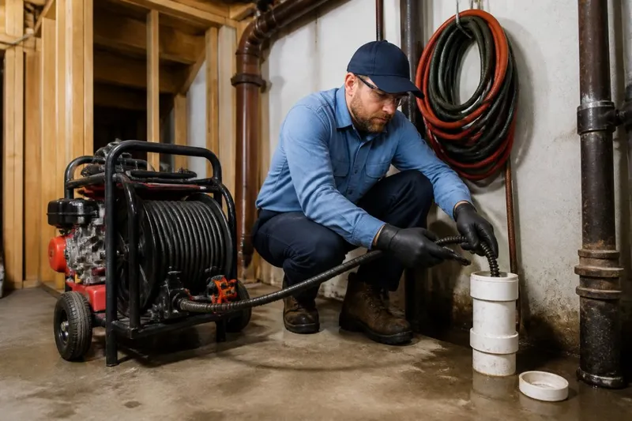
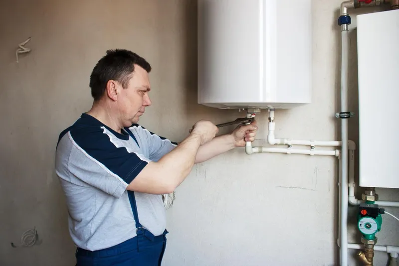

Burst & frozen pipes
Durham winters split pipes every year. We cut out the damaged section, replace it, and check the rest of the run for freeze damage before your water goes back on.
Request this service →Burst pipe, sewer backup, flooded basement or no hot water — one call connects you to a licensed, insured plumber working in Oshawa, not an offshore call centre. You approve an upfront price before any work starts.
If you have a burst pipe, sewer backup, flooded basement or no hot water in Oshawa, call (905) 555-0134 any time — nights, weekends and holidays. A licensed, insured local plumber diagnoses the problem first, quotes a firm flat price in writing, and only starts work when you approve it. The emergency call-out is $89–$129 and waived if you go ahead with the repair.
Prices on this page are illustrative Durham Region ranges, confirmed in writing on site before any work begins. Last updated November 13, 2026.
What's happening right now? Tap it and we'll pre-fill your quote request:
Water damage gets expensive by the minute. These three steps limit the damage before the plumber arrives — they take most homeowners under five minutes.
Your main shut-off is usually in the basement, on the wall facing the street, right where the water line enters — often beside the water meter. Turn the valve clockwise until it stops. No luck? Close the valve at the fixture itself (behind the toilet, under the sink).
If water is pooling near outlets, your panel, or a gas water heater, switch off the breakers for that area and keep everyone clear. Never stand in water to reach an electrical panel.
Get rugs, boxes and electronics off the floor, open the under-sink cabinet, and put a bucket under the drip. Then call — tell us what you shut off and where the water is, and the truck comes loaded for that job.
If water is going where it shouldn't, or not going where it should, it's on this list. Every visit starts with diagnosis and a firm price — no open-ended hourly clock.

Durham winters split pipes every year. We cut out the damaged section, replace it, and check the rest of the run for freeze damage before your water goes back on.
Request this service →
Sewage coming up through a basement drain is a health hazard, not an inconvenience. Power augering and camera inspection to find whether it's roots, grease or a collapsed line — then a real fix.
Request this service →
No hot water, a leaking tank or a pilot that won't stay lit. Repairs are usually finished the same visit when parts allow, and a failed tank can typically be replaced the same day — gas and electric, tank and tankless.
Request this service →A high water bill or a stain that keeps growing, with no obvious source. Acoustic and camera tools pinpoint the leak so walls only open where they have to.
Request this service →A dead sump pump during an Oshawa downpour can put inches of water in a basement fast. Pump replacement, backup battery systems and check-valve service, any hour.
Request this service →An overflowing toilet or a shut-off valve that won't close becomes an emergency at 2 a.m. Rebuilds, replacements and valve swaps, plus supply-line and hose failures.
Request this service →No dispatcher reading a script, no surprise bill. Here's the sequence, every time:
Describe what's happening and you'll get the shut-off steps for your exact problem while a local plumber is dispatched. Because they work out of Oshawa, most in-city calls are reached within about an hour — you'll get a straight ETA on the phone, not a script.
On site, we find the cause and quote the full repair in writing before starting. You approve it or you don't — the only charge if you say no is the call-out fee, quoted on the phone first.
The repair is tested under pressure before the tools get packed up, the work area is left dry and clean, and your invoice shows exactly what was done. Repairs are backed by the workmanship warranty of the plumber who does the job.
Ballpark ranges for common emergency jobs in Durham Region, so you know roughly what to expect before you pick up the phone. These are illustrative estimates, not a quote — the plumber who takes your job confirms the firm price on site, in writing, before work starts.
Ranges are illustrative estimates for the most common versions of each job in Oshawa-area homes, not prices charged by this service. Access (finished walls, concrete), after-hours timing and parts can move a quote within or beyond the range — that's exactly why the on-site quote is firm and given before work begins, not after. No hourly billing, no "we'll see" invoices.
Calls from inside Oshawa are routed first to plumbers already working in the city — that's how response times stay short. Neighbouring Durham communities are covered on the same 24/7 line.
An emergency call-out and diagnosis typically costs $89–$129, waived if you go ahead with the repair. Common repairs: burst pipe $250–$600, drain clearing $175–$350, main sewer line clearing with camera $350–$650, sump pump replacement $450–$850, and water heater replacement $1,400–$2,400. Those are illustrative ranges — the full table is in the pricing section above, and the firm price is quoted in writing on site before work starts.
Any problem that is actively damaging your home, or making it unsafe or unlivable: a burst or frozen pipe, a sewer backup, basement flooding or a failed sump pump, a leak you can't stop, an overflowing toilet with no working shut-off, or no hot water in winter. A slow drip or a tap you want replaced can usually wait for a booked visit — and booking it costs less than an emergency call-out.
Because your call is routed to plumbers working out of Oshawa, most in-city calls are reached within about an hour. Weather, time of night and how many emergencies are stacked up can change that — when you call, you'll get a straight answer on timing for your address, not a script.
The call-out fee is at the higher end of the quoted range after hours, and it's told to you on the phone before anyone is dispatched. The repair itself is quoted flat on site — the price doesn't climb just because it's 2 a.m.
Yes. Diagnosis first, then a written, firm quote for the full repair. Work only starts when you approve it. If you decline, you pay only the call-out fee agreed on the phone.
Shut off the main water valve (usually in the basement on the street-facing wall, by the meter), switch off the water heater, keep clear of any water near electrical outlets, and move belongings off the floor. The full walk-through is in the "3 things to do first" section above.
The plumber who takes your job backs the repair with their written workmanship warranty, and parts carry the manufacturer's warranty. Before you approve the quote, get the warranty terms in writing — a reputable plumber will hand them over without blinking.
For standard jobs like a sump pump or water heater replacement, we can usually give a tight range from photos and a few details — use the form below. For leaks and backups, an honest price needs eyes on the problem, which is what the call-out covers.
Yes. The same 24/7 line covers Oshawa, Whitby, Ajax, Pickering, Courtice, Bowmanville, Brooklin and Clarington. Calls inside Oshawa are routed first to plumbers already working in the city, which is why response times are shortest there — expect a straight ETA for your town when you call.
Stop the damage first: shut off the water at the main valve if it's safe to do so. Then notify your landlord or property manager right away — plumbing repairs are normally their responsibility. If water is actively flooding and you can't reach them, call the emergency line anyway and keep your receipts plus a record of your attempts to reach the landlord.
Water actively flooding? Skip the form and call — it's faster, and the line is answered around the clock.
Call or text 24/7:
(905) 555-0134
For everything else, send the form and your request opens ready to text to the on-call plumber — no account, no waiting on an inbox nobody checks at night.